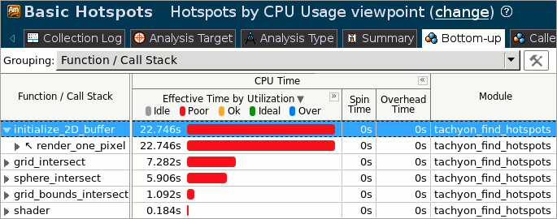
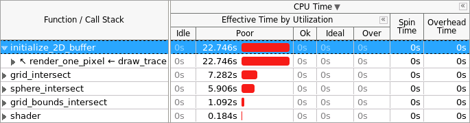

When the sample application exits, the Intel® VTune™ Amplifier
finalizes the results and opens the
Hotspots by CPU
Usage viewpoint where each window or pane is configured to display
code regions that consumed a lot of CPU time. To interpret the data on the
sample code performance, do the following:
When the sample application exits, the Intel® VTune™ Amplifier
finalizes the results and opens the
Hotspots by CPU
Usage viewpoint where each window or pane is configured to display
code regions that consumed a lot of CPU time. To interpret the data on the
sample code performance, do the following:
Understand the basic performance metrics provided by the Basic Hotspots analysis.
Note
The screenshots and execution time data provided in this tutorial are created on a system with 8 CPU cores. Your data may vary depending on the number and type of CPU cores on your system.
Understand the Basic Hotspots Metrics
Start analysis with the
Summary window. To interpret the data, hover over the question
mark icons
 to read the pop-up help and
better understand what each performance metric means.
to read the pop-up help and
better understand what each performance metric means.

Note that CPU Time for the sample application is equal to 38.158 seconds. It is the sum of CPU time for all application threads. Total Thread Count is 1, so the sample application is single-threaded.
The Top Hotspots section provides data on the most time-consuming functions (hotspot functions) sorted by CPU time spent on their execution.

For the sample application, the initialize_2D_buffer function, which took 22.746 seconds to execute, shows up at the top of the list as the hottest function.
The [Others] entry at the bottom shows the sum of CPU time for all functions not listed in the table.
The CPU Usage Histogram represents the Elapsed time and usage level for the available logical processors.

The tachyon_find_hotspots application ran mostly on one logical CPU. If you hover over the highest bar, you see that it spent 38.15336 seconds using one core only, which is classified by the VTune Amplifier as a Poor utilization for a multicore system. To understand what prevented the application from using all available logical CPUs effectively, explore the Bottom-up pane.
Analyze the Most Time-consuming Functions
Click the Bottom-up tab to explore the Bottom-up pane. By default, the data in the grid is sorted by Function. You may change the grouping level using the Grouping drop-down menu at the top of the grid.
Analyze the CPU Time column values. Functions that took most CPU time to execute are listed on top.
The
initialize_2D_buffer function took the maximum time to
execute,22.746 seconds, and had the
longest poor CPU utilization (red
 bars). This means that the
processor cores were underutilized most of the time spent on executing this
function.
bars). This means that the
processor cores were underutilized most of the time spent on executing this
function.

To get the detailed CPU usage information per function, use the
 Expand button in the
Bottom-up pane to expand the
CPU Time column.
Expand button in the
Bottom-up pane to expand the
CPU Time column.

Click the arrow sign
 at the
initialize_2D_buffer function to expand the stacks
calling this function. You see that it was called only by the
render_one_pixel function.
at the
initialize_2D_buffer function to expand the stacks
calling this function. You see that it was called only by the
render_one_pixel function.
Note
You may change the stack representation to a "tree" style by
clicking the
 Change Stack Layout button.
Change Stack Layout button.
Select the initialize_2D_buffer function in the grid and explore the data provided in the Call Stack pane on the right. The Call Stack pane displays full stack data for each hotspot function, enables you to navigate between function call stacks and understand the impact of each stack to the function CPU time. The stack functions in the Call Stack pane are represented in the following format:
<module>!<function> - <file>:<line number>, where the line number corresponds to the line calling the next function in the stack.

For the sample application, the hottest function initialize_2D_buffer is called at line 143 of the render_one_pixel function in the find_hotspots.cpp file.
Analyze Performance per Thread
If you change the grouping level in the Bottom-up pane from Function/Call Stack to Thread/Function/Call Stack, you see that the initialize_2D_buffer function belongs to the tachyon_find_ho thread. To get detailed information on the thread performance, explore the Timeline pane.

|
Timeline area. When you hover over the graph element, the timeline tooltip displays the time passed since the application has been launched. |
|
|
Threads area that shows the distribution of CPU time utilization per thread. Hover over a bar to see the CPU time utilization in percent for this thread at each moment of time. Green zones show the time threads are active. |
|
|
CPU Usage area that shows the distribution of CPU time utilization for the whole application. Hover over a bar to see the application-level CPU time utilization in percent at each moment of time. VTune Amplifier calculates the overall CPU Usage metric as the sum of CPU time per each thread of the Threads area. Maximum CPU Usage value is equal to [number of processor cores] x 100%. |
|
The Timeline analysis identifies that the _start thread was actively utilizing CPU resources most of the time. The CPU Usage tooltip shows that CPU time values are about 100% whereas the maximum CPU time value for a system with 8 cores is 800%. This means that the processor cores were under-utilized for most of the time spent on executing the tachyon_find_hotspots application.